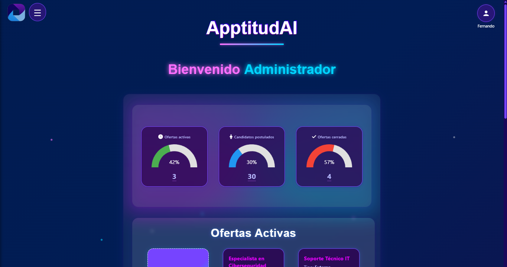
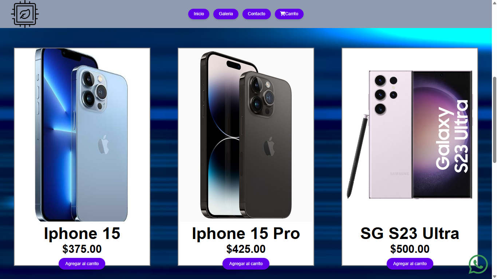

Mis Proyectos
Explora mis trabajos como desarrollor

Sistema de Gestión Segura
Aplicación web para gestión de usuarios con autenticación robusta, cifrado de datos y auditoría de seguridad.
Python
Flask
SQLite
JWT
- Autenticación multifactor
- Cifrado AES-256
- Logs de auditoría
- Validación de entrada

Analizador de Vulnerabilidades Web
Herramienta automatizada para detectar vulnerabilidades comunes en aplicaciones web como XSS, SQL injection y CSRF.
Python
Requests
BeautifulSoup
Selenium
- Detección de XSS
- Análisis SQL injection
- Reportes detallados
- Interfaz gráfica